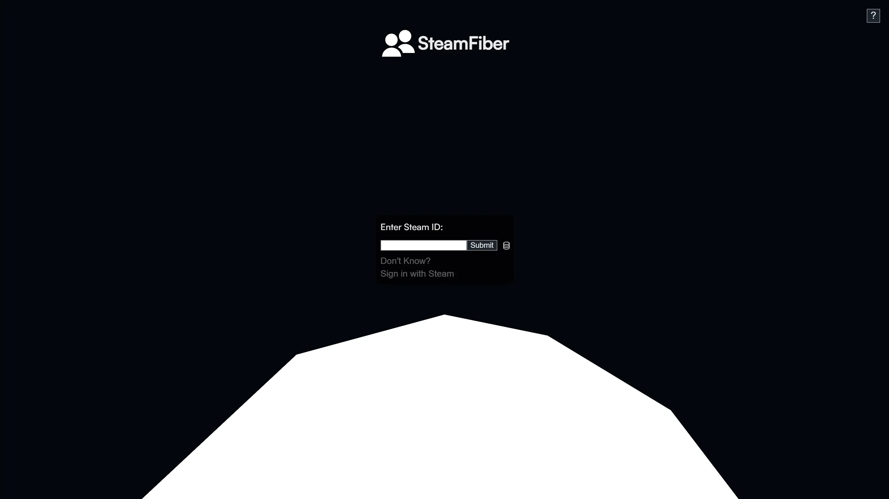

My Websites

SteamFiber
With just your Steam ID, you can create a 3D visualization of your Steam friends network and share it
Remaking Octopath Traveler's UI
Octopath Traveler is one of my favorite games, so I wanted to see how well I could recreate some UI elements from the game
TypeSwitch
Aiming to improve my Spanish writing, I developed TypeSwitch to help me learn Spanish in context
Game Projects
MonsterMon
VR Monster Catching Simulator
Other Projects
SU Social
Social Media app for Syracuse University Students